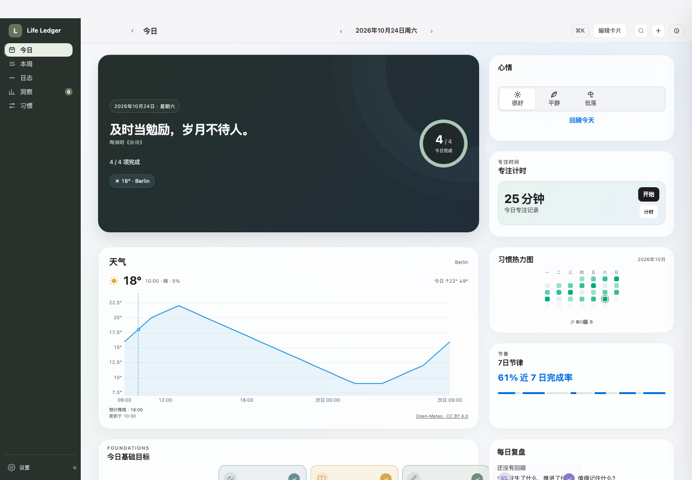
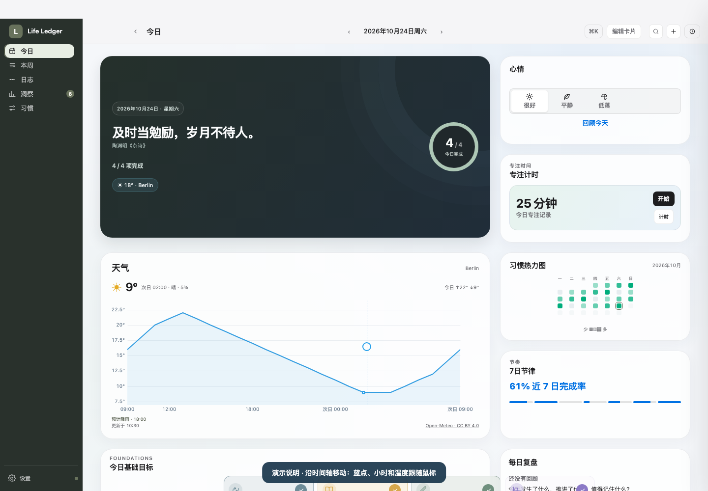
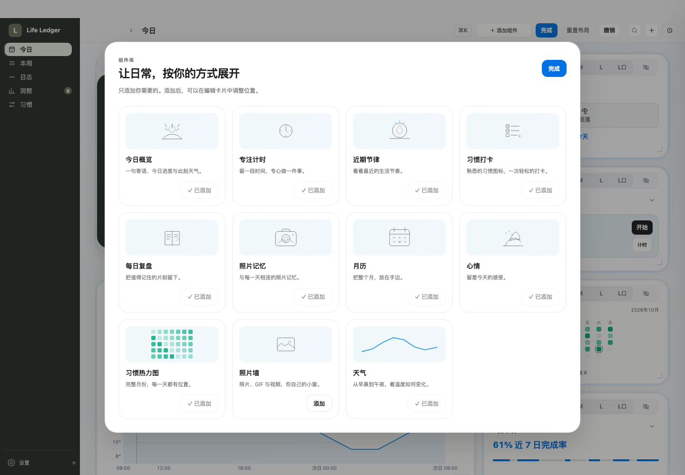

这轮只修改天气、欢迎卡天气摘要及组件添加机制。心情与热力图的进一步视觉调整仍待下一检查点。以下是实际应用页面，不是另建的效果稿；虚构数据、固定模拟天气，未打包或替换本地 App。录屏中的字幕与蓝色指针仅为演示标注。
小摘要只显示当前温度。鼠标探索未来小时，不改变“此刻”的读数。欢迎卡或天气卡的编辑设置均可选择城市；无需保留独立天气卡才能使用摘要。

复用 uPlot：温度纵轴、跨日时间轴、蓝色指示线和温度点。鼠标沿图表探索，键盘可用左右方向键、Home、End。今日最高最低按城市当地自然日计算；数据缓存与雨雪提示仍保留。

编辑卡片 → 添加组件。未添加项不再进入编辑栅格；移除也不留下占位卡。新添加的组件寻找可用位置，保留已有卡片位置和数据。添加淡入使用 Motion 的轻量原生代码；键盘和低动态模式不播放装饰性动画。

图表与动效资源均本地打包并保留 MIT 许可证；不依赖 CDN、未切换技术栈、未安装新全局 skill 或 MCP。原网页线上版本没有改动。